netwrite Functionnetwrite.Rmdideanet aims to simplify learning and performing network
analysis in R, which is currently arduous and time-consuming because
necessary tools span multiple packages. Each package has its own data
formats and syntax, leading to difficulties in choosing the right
function as well as potential conflicts between packages. Packages often
assume data order and default settings, which may not be readily
apparent to new users, leading to unrecognized data processing errors.
ideanet resolves these challenges by integrating them into
a cohesive set of functions that enable seamless, high-quality network
measurements from initial data, making it more accessible for
researchers.
This package, as part of the broader IDEANet project, is supported by the National Science Foundation as part of the Human Networks and Data Science - Infrastructure program (BCS-2024271 and BCS-2140024).
Global, or sociocentric, networks capture a full
census of actors (typically referred to as nodes or
vertices) and the relationships between them (typically
referred to as ties or edges) in a given context of
interest (such as a classroom, hospital, city, etc.). Users applying
ideanet to sociocentric data can use the
netwrite function to generate an extensive common set of
measures and summaries of their networks, which may be stored in a
variety of data structures.
Network data are generally represented as two linked datasets: the edgelist capturing relations and the nodelist capturing attributes of each node. In an edgelist each row represents an edge of a particular type connecting one node, i, to another node, j, both of whom are represented by a unique ID number. In a directed network, one column represents the sender of a tie while another represents the receiver. If the network is undirected, ties between nodes have no direction, and these columns merely represent the two nodes at the ends of a tie. Edgelists can also contain additional columns representing edge attributes, such as the relational type, strength or duration.
Edgelists are often accompanied by a nodelist containing attribute information about nodes. In a nodelist, each row represents a node in the network and each column is a node attribute. One of the columns is an ID that matches the unique ID number in the edgelist. If your network contains isolates – nodes with no relations – a nodelist is needed to retain information about them, as they cannot be represented in the edgelist.
To familiarize ourselves with netwrite and other
functions for sociocentric data, we’ll work with a nodelist and an
edgelist representing a simulated network of friendships in an American
high school (“Faux Mesa High”) borrowed from the package. Friendship
ties between nodes (students) are stored in the
fauxmesa_edges data frame, while attributes of individual
nodes are contained in fauxmesa_nodes (both of which are
native to ideanet):
library(ideanet)
#> Loading required package: igraphdata
fauxmesa_edges <- fauxmesa_edges
fauxmesa_nodes <- fauxmesa_nodesLet’s look over these two data frames:
dplyr::glimpse(fauxmesa_edges)
#> Rows: 203
#> Columns: 2
#> $ from <dbl> 1, 1, 1, 1, 1, 1, 1, 1, 1, 1, 1, 1, 1, 2, 2, 2, 2, 5, 8, 8, 8, 9,…
#> $ to <dbl> 25, 52, 58, 70, 87, 92, 96, 100, 110, 127, 151, 161, 174, 52, 100…This edgelist represents 203 directed connections between students. Looking at our nodelist, we see that we have information about grade level, race/ethnicity, and sex for 205 students.
dplyr::glimpse(fauxmesa_nodes)
#> Rows: 205
#> Columns: 4
#> $ id <dbl> 1, 2, 3, 4, 5, 6, 7, 8, 9, 10, 11, 12, 13, 14, 15, 16, 17, 18, 1…
#> $ grade <dbl> 7, 7, 11, 8, 10, 10, 8, 11, 9, 9, 9, 11, 9, 11, 8, 10, 10, 7, 10…
#> $ race <chr> "Hisp", "Hisp", "NatAm", "Hisp", "White", "Hisp", "NatAm", "NatA…
#> $ sex <chr> "F", "F", "M", "M", "F", "F", "M", "M", "M", "F", "M", "F", "M",…The netwrite function will generate a comprehensive set
of node and system-level measures for a network. netwrite
asks users to specify several arguments pertaining to node-level input
data, edge-level input data, and function outputs. To familiarize
ourselves with this function, we list these arguments below, organized
by category.
Edge-Level Arguments
data_type: Specifies the data format of the input data.
This argument accepts three different values – "edgelist",
"adjacency_list", and "adjacency_matrix" –
each of which correspond to popular formats for storing relational data
(we’ll cover adjacency matrices later in this vignette).i_elements: A vector of “ego” ids. For directed
networks, this argument specifies which nodes serve as the source of
directed edges.j_elements: A vector of “alter” ids. For directed
networks, this argument specifies which nodes serve as the target or
destination of directed edges.weights: Vector of edge weights, typically used to
signify the strength of edges between nodes. If not specified,
netwrite will assume that all edges are unweighted and
assign them an equal values of 1. Note that
netwrite requires that all edge weights be greater than
zero.weight_type: If weights is specified, this
argument determines how netwrite should interpret edge
weight values. Possible arguments are: "frequency",
indicating the higher values represent stronger ties, and
"distance", indicating that higher values represent weaker
ties.missing_code: A single numeric value indicating a
missing tie – in cases where the edge information contains both missing
and existing ties. Missing codes often appear in edgelists for which
there is not a corresponding nodelist; here missing codes are used to
include nodes that are network isolates.directed: Specify if the edges should be interpreted as
directed or undirected. Expects a TRUE or
FALSE logical.type: When working with multiple relation types, a
numeric or character vector indicating the types of relationships
represented in the edgelist.Node-Level Arguments
nodelist: If available, one can specify this argument
as either a vector of unique node identifiers or a data frame
containing a full nodelist (if not specified, node_id will
be generated from the edgelist).node_id: If a data frame is given for the
nodelist argument, this argument should be set to a single
character value indicating the name of the column in the nodelist
containing unique node identifiers.Output Arguments
output: netwrite produces a set of outputs
pertaining to different aspects of network analysis. While
netwrite produces all possible outputs by default, users
may want only a subset to minimize clutter. The output
argument takes a character vector specifying which outputs should be
created. Possible arguments are: "graph",
"largest_bi_component", "largest_component",
"node_measure_plot", "nodelist",
"edgelist", "system_level_measures", and
"system_measure_plot".net_name: A character value indicating the name that
exported igraph objects should be given.message: Silences messages and warnings. Expects
TRUE or FALSE logical.shiny: A logical value indicating whether
netwrite is being used in conjunction with .
shiny should also be set to TRUE when using
ideanet in an R Markdown file that users expect to knit
into a document.Now let’s use netwrite to get a better understanding of
this school’s friendship network:
nw_fauxmesa <- netwrite(data_type = "edgelist",
nodelist = fauxmesa_nodes,
node_id = "id",
i_elements = fauxmesa_edges$from,
j_elements = fauxmesa_edges$to,
directed = TRUE,
net_name = "faux_mesa",
shiny = TRUE)
#> Warning in bonacich_igraph(g, directed = as.logical(directed), message =
#> message): (Bonacich power centrality) Isolates detected in network. Isolates
#> will be removed from network when calculating power centrality measure, and
#> will be assigned NA values in final output.
#> Warning in bonacich_igraph(g, directed = as.logical(directed), message = message): (Bonacich power centrality) Network consists of 2+ unconnected components. Bonacich power centrality scores will be calculated for nodes based on their position within their respective weak components, provided components contain at least 5 nodes. Nodes in components consisting of fewer than five nodes will be assigned NA values in final output.
#> Warning in bonacich_igraph(g, directed = as.logical(directed), message = message): (Bonacich power centrality) Adjacency matrix for this component is singular. Network will be treated as undirected in order to calculate measures.
#> Warning in bonacich_igraph(g, directed = as.logical(directed), bpct = -0.75, :
#> (Bonacich power centrality) Isolates detected in network. Isolates will be
#> removed from network when calculating power centrality measure, and will be
#> assigned NA values in final output.
#> Warning in bonacich_igraph(g, directed = as.logical(directed), bpct = -0.75, : (Bonacich power centrality) Network consists of 2+ unconnected components. Bonacich power centrality scores will be calculated for nodes based on their position within their respective weak components, provided components contain at least 5 nodes. Nodes in components consisting of fewer than five nodes will be assigned NA values in final output.
#> Warning in bonacich_igraph(g, directed = as.logical(directed), bpct = -0.75, : (Bonacich power centrality) Adjacency matrix for this component is singular. Network will be treated as undirected in order to calculate measures.
#> Warning in eigen_igraph(g, directed = as.logical(directed), message = message): (Eigenvector centrality) Isolates detected in network. Isolates will be removed from network when calculating eigenvector centrality measure, and will be assigned NA values in final output.
#> Warning in eigen_igraph(g, directed = as.logical(directed), message = message): (Eigenvector centrality) Network consists of multiple isolated components. Eigenvector centrality will be calculated for nodes in components with at least five nodes, and will be calculated within-component.
#> Warning in eigen_igraph(g, directed = as.logical(directed), message = message): (Eigenvector centrality) Adjacency matrix for this component is singular. Network will be treated as undirected in order to calculate measures.
#> Warning in eigen_centralization(g, directed = TRUE): Eigenvector centralization
#> calculated only for largest weak component.
#> Warning in eigenvector_centrality_impl(graph = graph, directed = directed, : Graph is directed and acyclic; returning eigenvector centralities of 1 in sink vertices, and 0 everywhere else.
#> Source: centrality/eigenvector.c:337
#> Warning in eigenvector_centrality_impl(graph = graph, directed = directed, : Graph is directed and acyclic; returning eigenvector centralities of 1 in sink vertices, and 0 everywhere else.
#> Source: centrality/eigenvector.c:337
#> Warning in eigenvector_centrality_impl(graph = graph, directed = directed, : Graph is directed and acyclic; returning eigenvector centralities of 1 in sink vertices, and 0 everywhere else.
#> Source: centrality/eigenvector.c:337
#> Warning in eigenvector_centrality_impl(graph = graph, directed = directed, : Graph is directed and acyclic; returning eigenvector centralities of 1 in sink vertices, and 0 everywhere else.
#> Source: centrality/eigenvector.c:337
#> Warning in k_cohesion(graph = g): Graph will be treated as undirected for
#> calculation of k-core cohesion measure.
#> `stat_bin()` using `bins = 30`. Pick better value `binwidth`.
#> `stat_bin()` using `bins = 30`. Pick better value `binwidth`.
#> `stat_bin()` using `bins = 30`. Pick better value `binwidth`.
#> Warning: Removed 170 rows containing non-finite outside the scale range
#> (`stat_bin()`).
#> `stat_bin()` using `bins = 30`. Pick better value `binwidth`.
#> Warning: Removed 85 rows containing non-finite outside the scale range
#> (`stat_bin()`).
#> `stat_bin()` using `bins = 30`. Pick better value `binwidth`.
#> Warning: Removed 57 rows containing non-finite outside the scale range
#> (`stat_bin()`).
#> `stat_bin()` using `bins = 30`. Pick better value `binwidth`.Many network measures only apply to networks with particular
structures. For example, eigenvector based methods cannot apply to
isolates and many measures assume a network with one large connected
component. In cases (as here), where the network does not conform to
those expectations, we have made choices that seem reasonable to us
(such as assigning NA values or running the measure
separately by connected component) and send a warning to the output.
Users should take care to inspect these warnings to see if they apply to
measures they intend to use in analysis and that they agree with our
choices. Here we see that certain centrality measures have been adjusted
to account for the presence of singular matrices, multiple components,
and isolated nodes.
Upon completion, netwrite stores its outputs in a single
list object. In the following section, we’ll examine each of the outputs
within this list and what they contain.
netwrite Output
netwrite outputs multiple measures aimed at
characterizing the network’s global structure. One can view a select set
of these measures in a summary visualization stored in the
system_measure_plot object:
nw_fauxmesa$system_measure_plot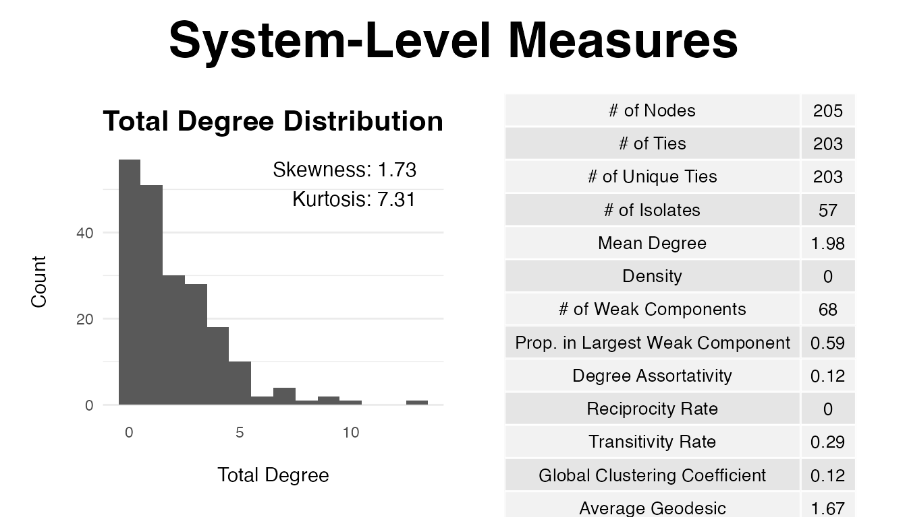
A more comprehensive set of measures is available in traditional
table form via the system_level_measures object:
head(nw_fauxmesa$system_level_measures)| measure_labels | measure_descriptions | measures |
|---|---|---|
| Type of Graph | Type of graph (either directed or undirected) | Directed |
| Weighted | Whether or not edges in the graph have weights | No |
| Number of Nodes | The number of nodes in the graph | 205 |
| Number of Ties | The number of ties in the graph | 203 |
| Number of Unique Ties | The number of unique ties (ego-alter pairs) in the graph | 203 |
| Number of Tie Types | The number of types of tie in the graph (if multi-relational) | NA |
igraph Object(s)
igraph is one of the standard network analysis packages
in R. netwrite creates an igraph object that
contains all of the original data from the input nodelist and edgelist,
plus edge-level and node-level metrics computed on the network by
netwrite. This igraph object allows for
traditional network manipulation, such as plotting. The
igraph object will bear the name users specify in
netwrite’s net_name argument (here
faux_mesa); otherwise it will be stored as an object named
network.
nw_fauxmesa$faux_mesa
#> IGRAPH 2b99d5d DNW- 205 203 --
#> + attr: name (v/c), attr (v/c), in_original_nodelist (v/l), grade
#> | (v/n), race (v/c), sex (v/c), id (v/n), original_id (v/c),
#> | weak_membership (v/n), in_largest_weak (v/l), strong_membership
#> | (v/n), in_largest_strong (v/l), total_degree (v/n), weighted_degree
#> | (v/n), norm_weighted_degree (v/n), in_degree (v/n), out_degree (v/n),
#> | weighted_indegree (v/n), norm_weighted_indegree (v/n),
#> | weighted_outdegree (v/n), norm_weighted_outdegree (v/n), closeness_in
#> | (v/n), closeness_out (v/n), closeness_undirected (v/n), betweenness
#> | (v/n), bonpow (v/n), bonpow_negative (v/n), eigen_centrality (v/n),
#> | pagerank (v/n), burt_constraint (v/n), burt_hierarchy (v/n),
#> | effective_size (v/n), proportion_reachable_in (v/n),
#> | proportion_reachable_out (v/n), proportion_reachable_all (v/n),
#> | in_largest_bicomponent (v/l), weight (e/n)
#> + edges from 2b99d5d (vertex names):Note that this igraph object has various measures
embedded in it as node- and edge- attributes. Having these measures
already contained in the igraph object ensures that node
attributes are properly linked to the network object, which allows us to
use them when customizing network visualizations. Here we plot our
network with nodes colored by student grade level, which appeared in our
original nodelist:
plot(nw_fauxmesa$faux_mesa,
vertex.label = NA,
vertex.size = 4,
edge.arrow.size = 0.2,
vertex.color = igraph::V(nw_fauxmesa$faux_mesa)$grade)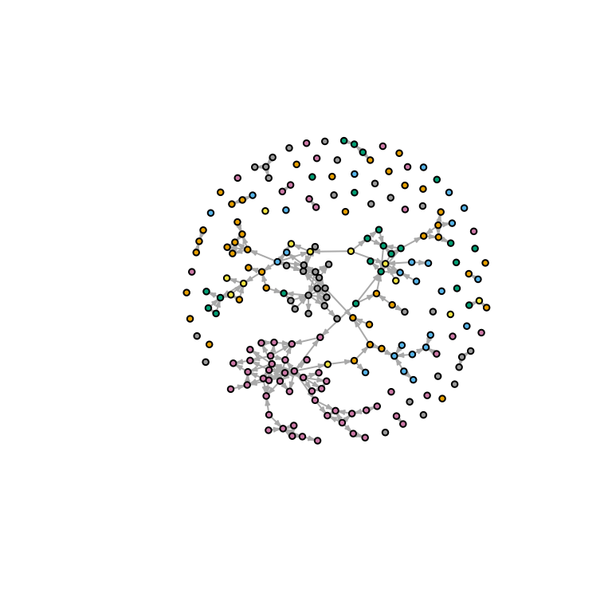
In addition to the full network, researchers may be interested in the
shape of major sub-components. netwrite outputs two
additional graph objects: the largest component in the network, and the
largest bi-component of the network.
plot(nw_fauxmesa$largest_component, vertex.label = NA, vertex.size = 2, edge.arrow.size = 0.2,
main = "Largest Component")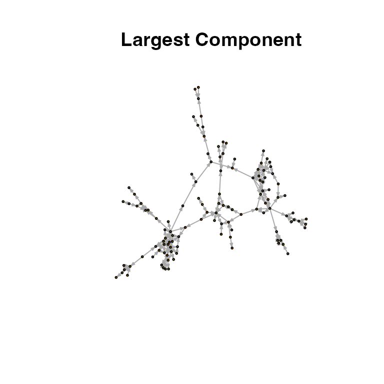
plot(nw_fauxmesa$largest_bi_component, vertex.label = NA, vertex.size = 2, edge.arrow.size = 0.2,
main = "Largest Bicomponent")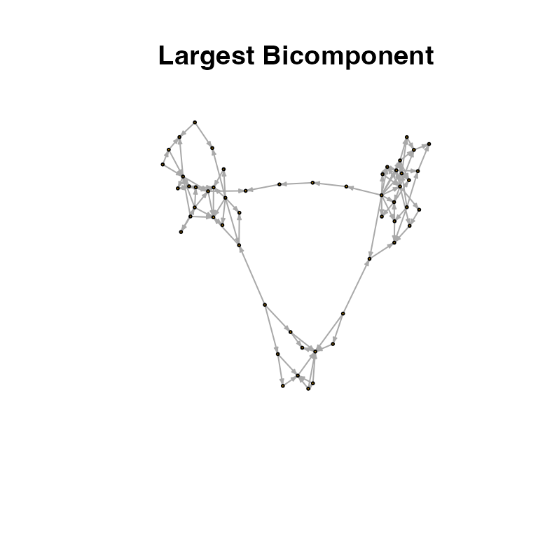
In some cases, networks may have 2+ largest components of equal size.
When this occurs, netwrite will store each of the largest
components as a list so that users may access them all.
netwrite outputs an edgelist dataframe of the same
length as the input edgelist. This edgelist object contains unique
dyad-level ids, simplified ego and alter ids (i_id and
j_id, respectively), and the original id values and weights
as they initially appeared in edges (uniformly set to 1 if
no weights are defined).
head(nw_fauxmesa$edgelist)| Obs_ID | i_elements | i_id | j_elements | j_id | weight |
|---|---|---|---|---|---|
| 1 | 1 | 0 | 25 | 24 | 1 |
| 2 | 1 | 0 | 52 | 51 | 1 |
| 3 | 1 | 0 | 58 | 57 | 1 |
| 4 | 1 | 0 | 70 | 69 | 1 |
| 5 | 1 | 0 | 87 | 86 | 1 |
| 6 | 1 | 0 | 92 | 91 | 1 |
You may notice that i_id and j_id are
zero-indexed. This is done to maximize compatibility with the
igraph package.
Finally, netwrite returns several popular node-level
measures as a dataframe of values and plots their distributions. These
are accessed via the node_measures and
node_measure_plot objects, respectively. The metrics set
are restricted to those applicable to the type of graph
(weighted/unweighted, directed/undirected).
head(nw_fauxmesa$node_measures)| id | original_id | in_original_nodelist | grade | race | sex | weak_membership | in_largest_weak | strong_membership | in_largest_strong | total_degree | weighted_degree | norm_weighted_degree | in_degree | out_degree | weighted_indegree | norm_weighted_indegree | weighted_outdegree | norm_weighted_outdegree | closeness_in | closeness_out | closeness_undirected | betweenness | bonpow | bonpow_negative | eigen_centrality | pagerank | burt_constraint | burt_hierarchy | effective_size | proportion_reachable_in | proportion_reachable_out | proportion_reachable_all | in_largest_bicomponent |
|---|---|---|---|---|---|---|---|---|---|---|---|---|---|---|---|---|---|---|---|---|---|---|---|---|---|---|---|---|---|---|---|---|---|
| 0 | 1 | TRUE | 7 | Hisp | F | 1 | TRUE | 171 | FALSE | 13 | 13 | 0.0320197 | 0 | 13 | 0 | 0 | 13 | 0.0640394 | 0 | 0.1090686 | 0.1871090 | 0 | 4.0304155 | 4.0056154 | 1.0000000 | 0.0030482 | 0.1404649 | 0.0409976 | 12.15385 | 0 | 0.1666667 | 0.5833333 | TRUE |
| 1 | 2 | TRUE | 7 | Hisp | F | 1 | TRUE | 170 | FALSE | 4 | 4 | 0.0098522 | 0 | 4 | 0 | 0 | 4 | 0.0197044 | 0 | 0.0326797 | 0.1319121 | 0 | 0.9964984 | 1.1631636 | 0.2033687 | 0.0030482 | 0.3203125 | 0.0175216 | 3.75000 | 0 | 0.0490196 | 0.5833333 | TRUE |
| 2 | 3 | TRUE | 11 | NatAm | M | 12 | FALSE | 169 | FALSE | 0 | 0 | 0.0000000 | 0 | 0 | 0 | 0 | 0 | 0.0000000 | 0 | 0.0000000 | 0.0000000 | 0 | NA | NA | NA | 0.0030482 | 1.0000000 | NA | 0.00000 | 0 | 0.0000000 | 0.0000000 | NA |
| 3 | 4 | TRUE | 8 | Hisp | M | 13 | FALSE | 168 | FALSE | 0 | 0 | 0.0000000 | 0 | 0 | 0 | 0 | 0 | 0.0000000 | 0 | 0.0000000 | 0.0000000 | 0 | NA | NA | NA | 0.0030482 | 1.0000000 | NA | 0.00000 | 0 | 0.0000000 | 0.0000000 | NA |
| 4 | 5 | TRUE | 10 | White | F | 1 | TRUE | 166 | FALSE | 1 | 1 | 0.0024631 | 0 | 1 | 0 | 0 | 1 | 0.0049261 | 0 | 0.0049020 | 0.0766593 | 0 | 0.1288139 | 0.2664125 | 0.0000096 | 0.0030482 | 1.0000000 | 1.0000000 | 1.00000 | 0 | 0.0049020 | 0.5833333 | NA |
| 5 | 6 | TRUE | 10 | Hisp | F | 14 | FALSE | 165 | FALSE | 0 | 0 | 0.0000000 | 0 | 0 | 0 | 0 | 0 | 0.0000000 | 0 | 0.0000000 | 0.0000000 | 0 | NA | NA | NA | 0.0030482 | 1.0000000 | NA | 0.00000 | 0 | 0.0000000 | 0.0000000 | NA |
On first glance, one sees that the node_measures
dataframe contains simplified node identifiers matching those appearing
in edgelist. One also sees that node_measures
contains all original node-level attributes as they appeared in our
original nodelist. Depending on how it was initially named, a nodelist’s
original column of node identifiers may be renamed to
original_id.
nw_fauxmesa$node_measure_plot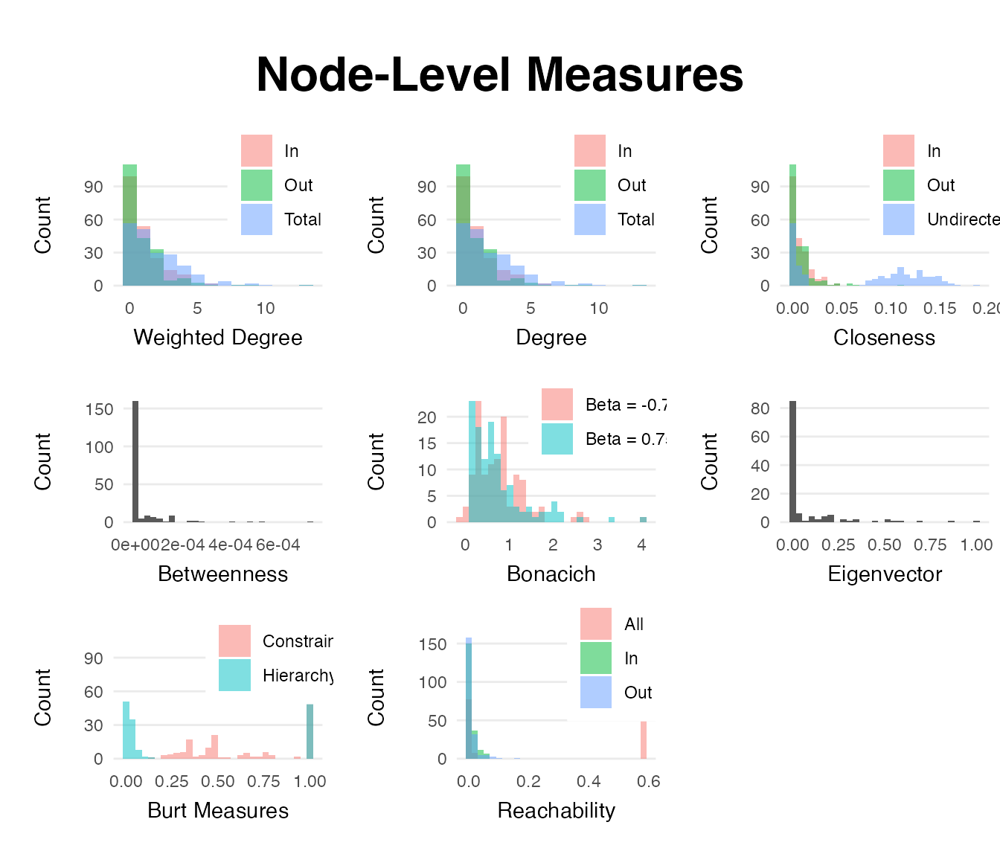
netwrite makes it simple to compute complex structural
metrics on existing relational data. The output of netwrite
is designed to facilitate the discovery process by providing key
visualizations that help support exploratory analysis.
In addition to edgelists, netwrite supports processing
and analysis of network data stored as an adjacency matrix. An
adjacency matrix is a square matrix in which each row and each
column corresponds to an individual node in the network. The value of a
given cell in this matrix, [i, j], indicates the
existence of a tie from node i to node j. Here we
provide a quick example of how to use netwrite on an
adjacency matrix. The matrix below represents a network of 9 nodes, the
ties between which form all possible triads and motifs that can appear
in a directed network.
triad
#> V1 V2 V3 V4 V5 V6 V7 V8 V9
#> [1,] 0 1 1 1 0 1 0 1 0
#> [2,] 0 0 0 0 1 0 0 1 0
#> [3,] 1 0 0 1 0 0 0 1 0
#> [4,] 1 0 1 0 0 0 0 0 0
#> [5,] 1 0 0 0 0 1 0 1 0
#> [6,] 0 0 0 0 0 0 0 0 0
#> [7,] 0 0 0 0 0 0 0 0 0
#> [8,] 1 0 0 0 0 1 0 0 0
#> [9,] 0 0 0 0 0 1 0 0 0Now we pass this matrix into netwrite.
nw_triad <- netwrite(data_type = "adjacency_matrix",
adjacency_matrix = triad,
directed = TRUE,
net_name = "triad_igraph",
shiny = TRUE)
#> `stat_bin()` using `bins = 30`. Pick better value `binwidth`.
#> `stat_bin()` using `bins = 30`. Pick better value `binwidth`.
#> `stat_bin()` using `bins = 30`. Pick better value `binwidth`.
#> `stat_bin()` using `bins = 30`. Pick better value `binwidth`.
#> `stat_bin()` using `bins = 30`. Pick better value `binwidth`.
#> `stat_bin()` using `bins = 30`. Pick better value `binwidth`.To show that we’ve successfully processed this matrix, let’s plot the
igraph object produced by netwrite:
plot(nw_triad$triad_igraph,
edge.arrow.size = 0.2,
vertex.label = NA)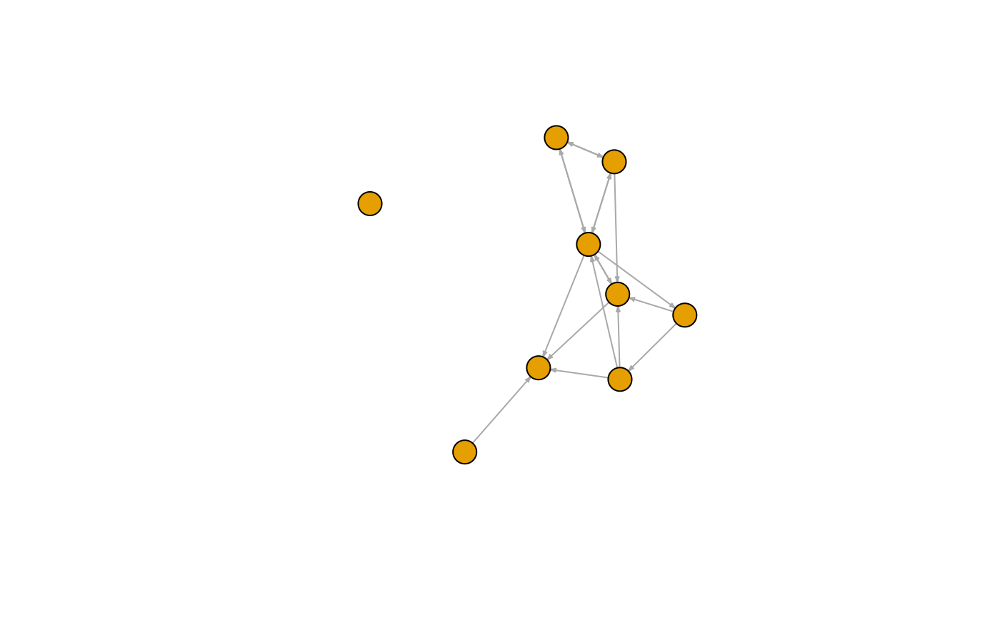
In some networks, edges may represent one of several different types
of relationships between nodes. These multirelational (or
multiplex) networks often demand more detailed processing and
analysis— users may want to subset these networks by each edge type and
calculate measures based on each subset. netwrite handles
such processing and analysis in a streamlined manner while making
minimal additional user demands. The function only requires that a
multirelational network’s edgelist is stored in a long format in which
each dyad-relationship type combination is given its own row.
To show how netwrite works with multirelational
networks, we’ll work with an edgelist of relationships between prominent
families in Renaissance-era Florence. Here edges between nodes can
represent marriages or business transactions between families:
head(florentine_edges)| source | target | weight | type |
|---|---|---|---|
| 0 | 8 | 1 | marriage |
| 1 | 5 | 1 | marriage |
| 1 | 6 | 1 | marriage |
| 1 | 8 | 1 | marriage |
| 2 | 4 | 1 | marriage |
| 2 | 8 | 1 | marriage |
| 2 | 4 | 1 | business |
| 2 | 5 | 1 | business |
| 2 | 8 | 1 | business |
| 2 | 10 | 1 | business |
To treat this network as multirelational, we only need to specify
which column in this edgelist indicates the type of each edge in the
network. We do this using the type argument:
nw_flor <- netwrite(nodelist = florentine_nodes,
node_id = "id",
i_elements = florentine_edges$source,
j_elements = florentine_edges$target,
type = florentine_edges$type,
directed = FALSE,
net_name = "florentine")
#> Processing network for edge type marriage
#> `stat_bin()` using `bins = 30`. Pick better value `binwidth`.
#> `stat_bin()` using `bins = 30`. Pick better value `binwidth`.
#> `stat_bin()` using `bins = 30`. Pick better value `binwidth`.
#> `stat_bin()` using `bins = 30`. Pick better value `binwidth`.
#> `stat_bin()` using `bins = 30`. Pick better value `binwidth`.
#> `stat_bin()` using `bins = 30`. Pick better value `binwidth`.
#> Processing network for edge type business
#>
#> `stat_bin()` using `bins = 30`. Pick better value `binwidth`.
#> `stat_bin()` using `bins = 30`. Pick better value `binwidth`.
#> `stat_bin()` using `bins = 30`. Pick better value `binwidth`.
#> `stat_bin()` using `bins = 30`. Pick better value `binwidth`.
#> `stat_bin()` using `bins = 30`. Pick better value `binwidth`.
#> `stat_bin()` using `bins = 30`. Pick better value `binwidth`.
#> Processing aggregate network of all edge types
#>
#> `stat_bin()` using `bins = 30`. Pick better value `binwidth`.
#> `stat_bin()` using `bins = 30`. Pick better value `binwidth`.
#> `stat_bin()` using `bins = 30`. Pick better value `binwidth`.
#> `stat_bin()` using `bins = 30`. Pick better value `binwidth`.
#> `stat_bin()` using `bins = 30`. Pick better value `binwidth`.
#> `stat_bin()` using `bins = 30`. Pick better value `binwidth`.When given a multi-relational network, netwrite will
return the outputs described previously in slightly different ways.
First, we can see that the edgelist object is now a list
containing an edgelist subset by each type of tie. Additionally, this
list contains a complete edgelist for the summary_graph
containing all ties.
head(nw_flor$edgelist$business)| Obs_ID | i_elements | i_id | j_elements | j_id | weight |
|---|---|---|---|---|---|
| 1 | 2 | 2 | 4 | 4 | 1 |
| 2 | 2 | 2 | 5 | 5 | 1 |
| 3 | 2 | 2 | 8 | 8 | 1 |
| 4 | 2 | 2 | 10 | 10 | 1 |
| 5 | 3 | 3 | 6 | 6 | 1 |
| 6 | 3 | 3 | 7 | 7 | 1 |
head(nw_flor$edgelist$summary_graph)| Obs_ID | i_elements | i_id | j_elements | j_id | weight | type | |
|---|---|---|---|---|---|---|---|
| 1 | 1 | 0 | 0 | 8 | 8 | 1 | marriage |
| 2 | 2 | 1 | 1 | 5 | 5 | 1 | marriage |
| 3 | 3 | 1 | 1 | 6 | 6 | 1 | marriage |
| 4 | 4 | 1 | 1 | 8 | 8 | 1 | marriage |
| 5 | 5 | 2 | 2 | 4 | 4 | 1 | marriage |
| 7 | 7 | 2 | 2 | 4 | 4 | 1 | business |
node_measures remains a single data frame, but now
includes each node-level metric calculated for each individual relation
type as well as the overall graph. We see here that
netwrite has calculated 3 different values for
total_degree. However, node_measures_plot is
now a list containing summary visualizations for each relation type as
well as the overall summary_graph.
| id | total_degree | marriage_total_degree | business_total_degree |
|---|---|---|---|
| 0 | 1 | 1 | 0 |
| 1 | 3 | 3 | 0 |
| 2 | 4 | 2 | 4 |
| 3 | 4 | 3 | 3 |
| 4 | 4 | 3 | 3 |
| 5 | 3 | 1 | 2 |
Similarly, system_level_measures remains a single data
frame, while system_measure_plot has become a list
containing multiple visualizations. Note that
system_level_measures now contains additional column
detailing measure values for each individual relation type.
head(nw_flor$system_level_measures)| measure_labels | description | summary_graph | marriage | business |
|---|---|---|---|---|
| Type of Graph | Type of graph (either directed or undirected) | Undirected | Undirected | Undirected |
| Weighted | Whether or not edges in the graph have weights | No | No | No |
| Number of Nodes | The number of nodes in the graph | 16 | 16 | 16 |
| Number of Ties | The number of ties in the graph | 35 | 20 | 15 |
| Number of Unique Ties | The number of unique ties (ego-alter pairs) in the graph | 27 | 20 | 15 |
| Number of Tie Types | The number of types of tie in the graph (if multi-relational) | 2 | NA | NA |
netwrite also produces both an igraph
object of the overall network, as it does with networks with a single
relation type, as well as a list of igraph objects for each
subset of the network. Here we access the igraph_list
object to compare business and marriage relationships between families
side-by-side:
# Create a consistent layout for both plots
flor_layout <- igraph::layout.fruchterman.reingold(nw_flor$igraph_list$marriage)
#> Warning: `layout.fruchterman.reingold()` was deprecated in igraph 2.1.0.
#> ℹ Please use `layout_with_fr()` instead.
#> This warning is displayed once per session.
#> Call `lifecycle::last_lifecycle_warnings()` to see where this warning was
#> generated.
plot(nw_flor$igraph_list$marriage, vertex.label = NA, vertex.size = 4, edge.arrow.size = 0.2,
vertex.color = "gray", main = "Marriage Network", layout = flor_layout)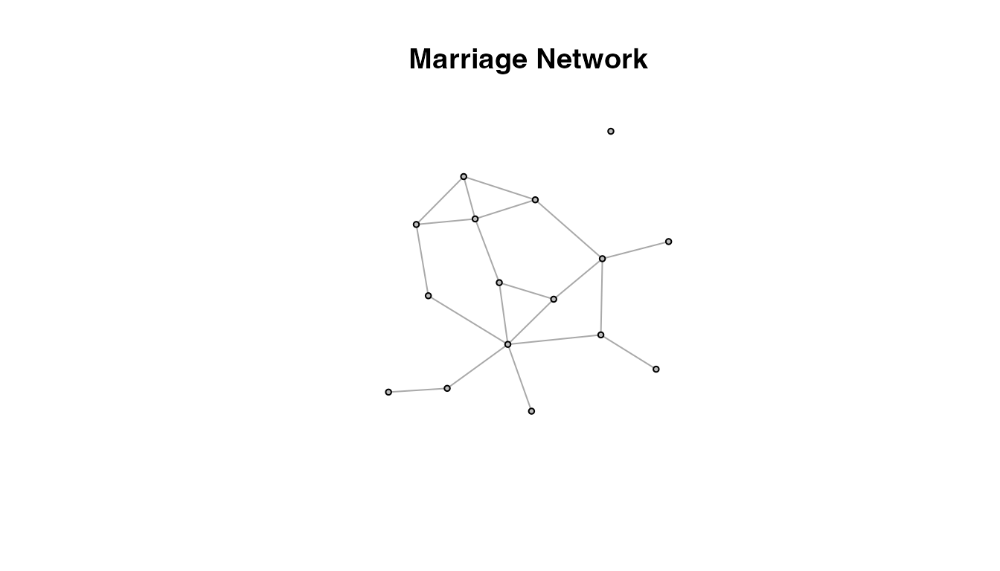
plot(nw_flor$igraph_list$business, vertex.label = NA, vertex.size = 4, edge.arrow.size = 0.2,
vertex.color = "red", main = "Business Network", layout = flor_layout)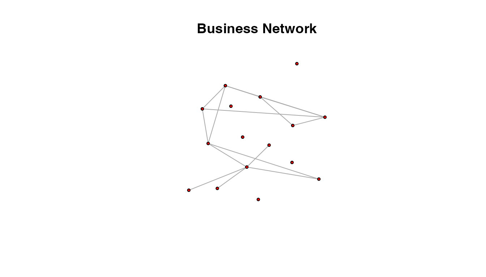
When analyzing a network, users are often interested in whether nodes
cluster together to form distinct subgroups or communities. Many methods
exist for identifying discernible communities in a network, and one
might want to know how different methods perform the same task.
ideanet’s comm_detect function leverages
several community detection algorithms found in the igraph
package, as well as a couple of others, to find and compare inferred
communities across these methods. Where relevant, each method is only
run at default values here so, for instance, the
edge_betweenness method will warn that mamberships “will be
selected based on the highest modularity score” from the dendrogram
generated by the method. Similarly cluster_leiden is run
here at the default resolution parameter for modularity and at a
resolution equal to the average weighted density of the network for the
constant Potts model.
Using comm_detect is simple: you only needs to pass an
igraph object produced by netwrite into the
function. Let’s quickly apply several community detection methods to the
Florentine families network we just processed.
flor_communities <- comm_detect(nw_flor$florentine)
#> Warning in comm_detect(nw_flor$florentine): Calling cluster_edge_betweenness with reciprocal weights, which may affect selected membership vector incorrectly.
#> Warning in igraph::cluster_edge_betweenness(g_undir, weights = igraph::E(g_undir)$r_weight, : Membership vector will be selected based on the highest modularity score.
#> Source: community/edge_betweenness.c:504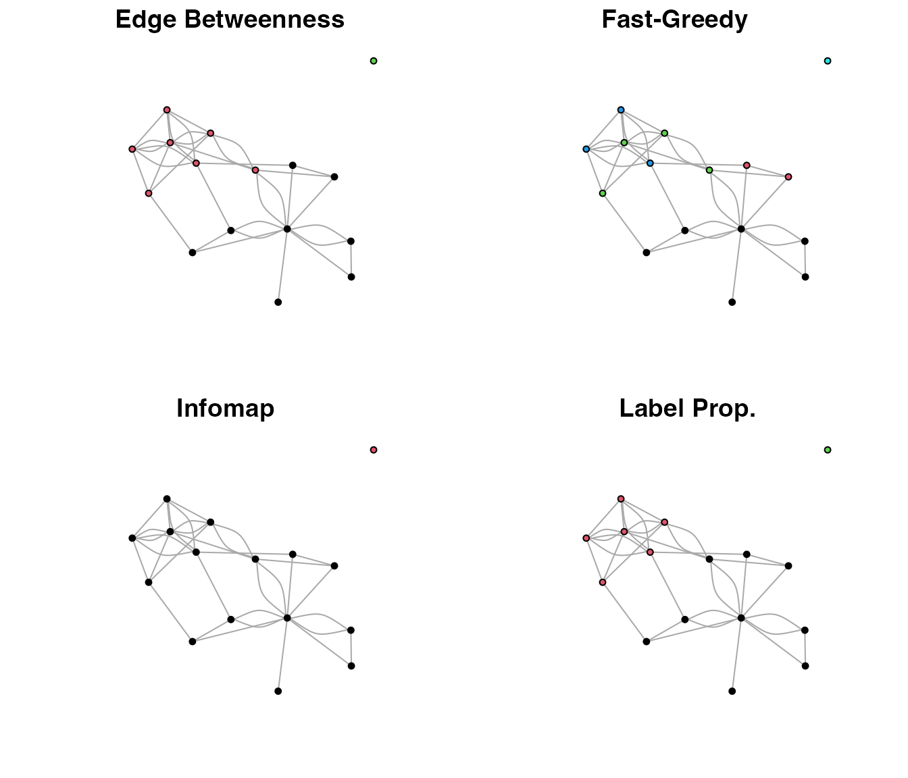
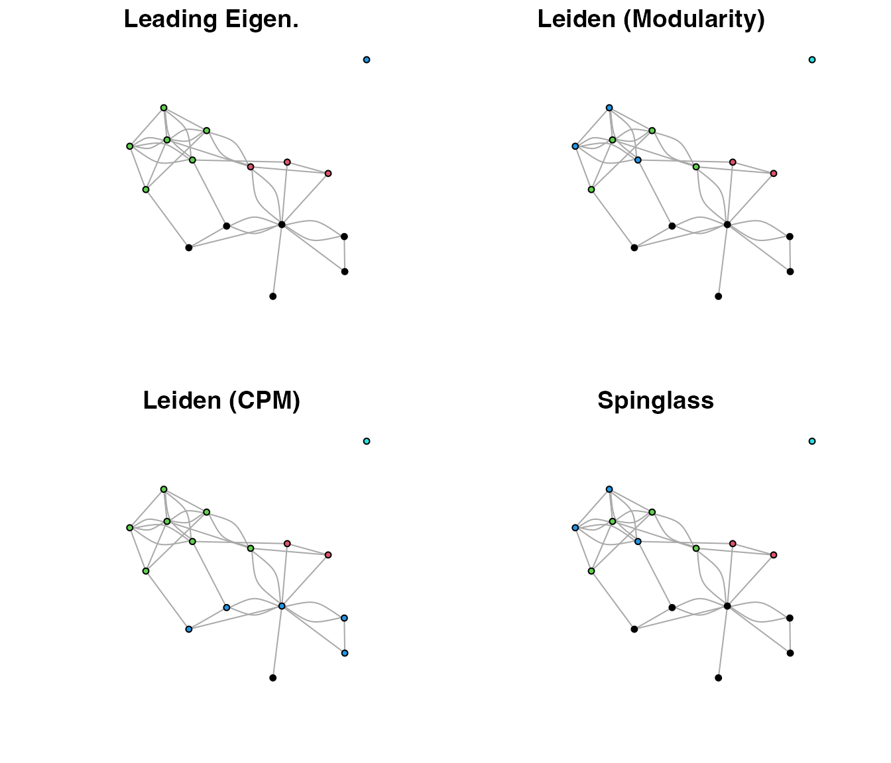
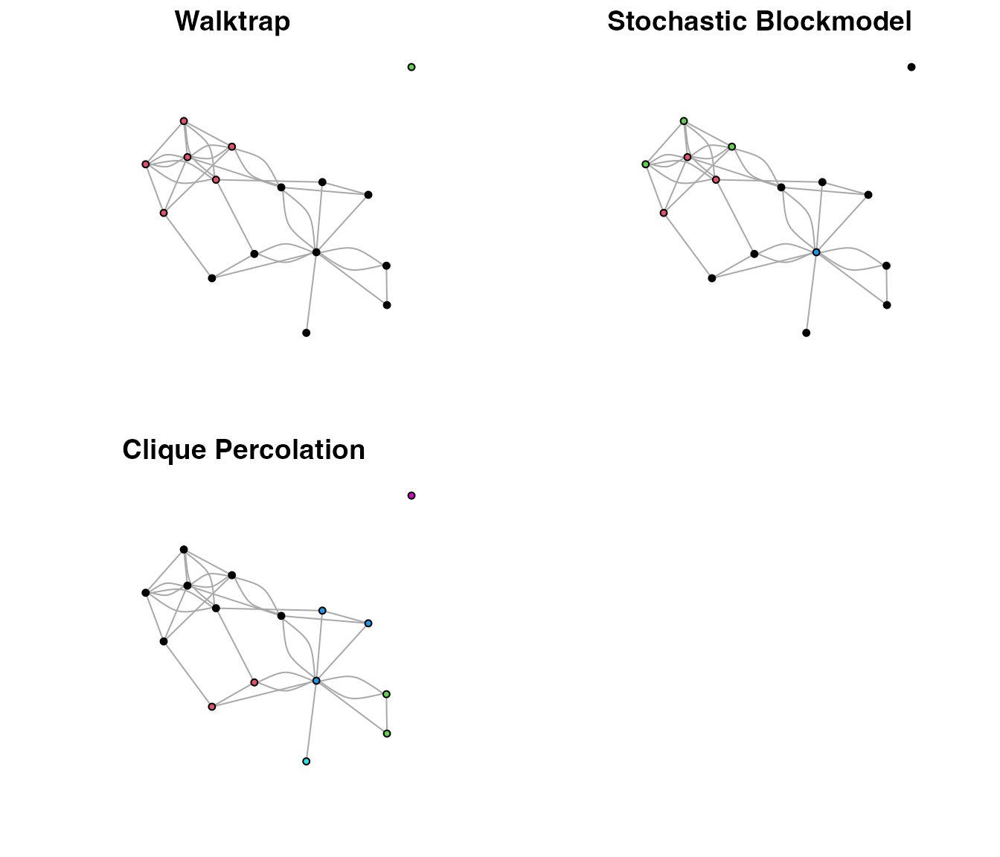
The comm_detect function returns a list of three data
frames, and will automatically generate a set of visualizations showing
each node’s community membership as determined by each community
detection method. Within the list produced, the summaries
data frame details the number of communities detected by each method, as
well as the modularity score associated with each method. This offers
one way of comparing community detection methods— higher modularity
scores (within a single network) typically indicate more effective
partitioning of the network (though there are many scores that one can
use).
flor_communities$summaries| method | num_communities | modularity |
|---|---|---|
| edge_betweenness | 3 | 0.3183673 |
| fast_greedy | 5 | 0.3367347 |
| infomap | 2 | 0.0000000 |
| label_prop | 3 | 0.3281633 |
| leading_eigen | 4 | 0.3314286 |
| leiden_mod | 5 | 0.3367347 |
| leiden_cpm | 5 | 0.3008163 |
| spinglass | 5 | 0.3367347 |
| walktrap | 3 | 0.3281633 |
| cp | 6 | 0.2277551 |
| sbm | 4 | -0.0702041 |
A second data frame in the list, score_comparison,
allows for further comparison of community detection methods.
score_comparison contains a matrix of adjusted Rand values
indicating the level of similarity between two methods in how they
assigned nodes to communities. This matrix tells us, for example, that
the Fast-Greedy and Leading Eigenvector methods were identical in their
community assignment:
flor_communities$score_comparison| edge_betweenness | fast_greedy | infomap | label_prop | leiden_mod | leiden_cpm | walktrap | leading_eigen | spinglass | sbm | cp | |
|---|---|---|---|---|---|---|---|---|---|---|---|
| edge_betweenness | NA | 0.5520995 | 0.1794872 | 0.7600686 | 0.5520995 | 0.6901580 | 0.7600686 | 0.6366939 | 0.5520995 | 0.3474427 | 0.5722257 |
| fast_greedy | 0.5520995 | NA | 0.0724638 | 0.4155251 | 1.0000000 | 0.6106870 | 0.4155251 | 0.6836158 | 1.0000000 | 0.1717172 | 0.3278008 |
| infomap | 0.1794872 | 0.0724638 | NA | 0.1910112 | 0.0724638 | 0.0987654 | 0.1910112 | 0.1028037 | 0.0724638 | -0.0748299 | 0.0760234 |
| label_prop | 0.7600686 | 0.4155251 | 0.1910112 | NA | 0.4155251 | 0.4444444 | 1.0000000 | 0.6782842 | 0.4155251 | 0.5636998 | 0.3260474 |
| leiden_mod | 0.5520995 | 1.0000000 | 0.0724638 | 0.4155251 | NA | 0.6106870 | 0.4155251 | 0.6836158 | 1.0000000 | 0.1717172 | 0.3278008 |
| leiden_cpm | 0.6901580 | 0.6106870 | 0.0987654 | 0.4444444 | 0.6106870 | NA | 0.4444444 | 0.7257384 | 0.6106870 | 0.0697674 | 0.7734139 |
| walktrap | 0.7600686 | 0.4155251 | 0.1910112 | 1.0000000 | 0.4155251 | 0.4444444 | NA | 0.6782842 | 0.4155251 | 0.5636998 | 0.3260474 |
| leading_eigen | 0.6366939 | 0.6836158 | 0.1028037 | 0.6782842 | 0.6836158 | 0.7257384 | 0.6782842 | NA | 0.6836158 | 0.2870906 | 0.4854586 |
| spinglass | 0.5520995 | 1.0000000 | 0.0724638 | 0.4155251 | 1.0000000 | 0.6106870 | 0.4155251 | 0.6836158 | NA | 0.1717172 | 0.3278008 |
| sbm | 0.3474427 | 0.1717172 | -0.0748299 | 0.5636998 | 0.1717172 | 0.0697674 | 0.5636998 | 0.2870906 | 0.1717172 | NA | -0.0040161 |
| cp | 0.5722257 | 0.3278008 | 0.0760234 | 0.3260474 | 0.3278008 | 0.7734139 | 0.3260474 | 0.4854586 | 0.3278008 | -0.0040161 | NA |
memberships, the final data frame in the list, shows
each node’s community membership according to each of the methods
used.
flor_communities$memberships| id | component | edge_betweenness_membership | fast_greedy_membership | infomap_membership | label_prop_membership | leiden_mod_membership | leiden_cpm_membership | walktrap_membership | leading_eigen_membership | spinglass_membership | sbm_membership | cp_cluster |
|---|---|---|---|---|---|---|---|---|---|---|---|---|
| 0 | 1 | 1 | 1 | 1 | 1 | 1 | 1 | 1 | 1 | 1 | 1 | 5 |
| 1 | 1 | 1 | 2 | 1 | 1 | 2 | 2 | 1 | 2 | 2 | 1 | 4 |
| 2 | 1 | 2 | 3 | 1 | 1 | 3 | 3 | 1 | 2 | 3 | 1 | 1 |
| 3 | 1 | 2 | 4 | 1 | 2 | 4 | 3 | 2 | 3 | 4 | 3 | 1 |
| 4 | 1 | 2 | 3 | 1 | 2 | 3 | 3 | 2 | 3 | 3 | 3 | 1 |
| 5 | 1 | 1 | 2 | 1 | 1 | 2 | 2 | 1 | 2 | 2 | 1 | 4 |
memberships is designed to be easily merged with the
node_measures data frame produced by netwrite,
should users be inclined to combine the two.